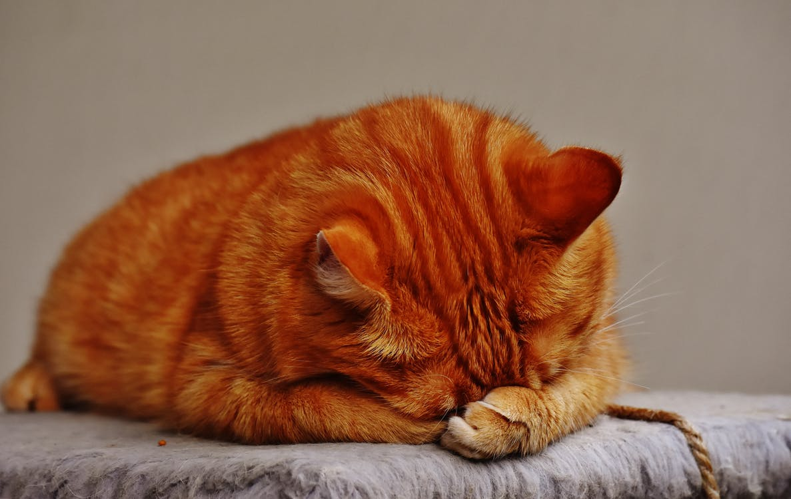

假如你的猫咪有攻击性行为，不妨参考一下这些提示：
1、如果它是一只孤单的老猫，不妨添一只小猫与它作伴。因为一老一少比较容易接受对方，不过要注意的是小猫要由一只老猫绝不认识的人带回家中。此人的出现是希望老猫不会将你与小猫联系在一起而产生嫉妒。
2、如果老猫对小猫有敌意，不妨称小猫为“老猫的小猫”，因为这能使它们之间产生正面的联系。其次，与小猫说话的时候，要同时跟老猫说话，使老猫投入，与小猫有正常接触，以此培养它们之间的感情。
3、假如猫咪对某人特别容易紧张，不妨把这个人说成是猫咪的人，如“这是猫咪的莉莉，它是莉莉的猫咪”。使他们联系在一起。这样会驱散猫咪心中对此人的紧张和焦虑，不过要反复练习。
4、猫咪是很容易受到主人的情绪影响的，身为主人的你应多做减低压力的运动和活动，使你和猫咪都得到松弛。
5、有些主人会到宠物医院去，利用镇静剂来控制猫咪的情绪，但如果单单是试用镇静剂，这是治标不治本的方法；要有成效，必须重建猫咪的行为并辅以镇静剂，这样才能帮助猫咪，减低触发它攻击性的行为。
6、音乐对猫咪也有松弛的作用，能减少它的攻击性行为。所以，你可以把你的音乐配以轻柔的背景音乐来播放，也有安抚猫咪的作用。
7、当猫咪感到紧张时，它会很自然地用爪去攻击它的敌人，所以你要经常给猫咪剪指甲，剪的时候，最好由另一个人抱着它，引开它的注意力。
总而言之，猫咪的攻击行为大多是因为情绪受刺激而引起的，所以主人要避免任何可能影响猫咪情绪的事情发生。